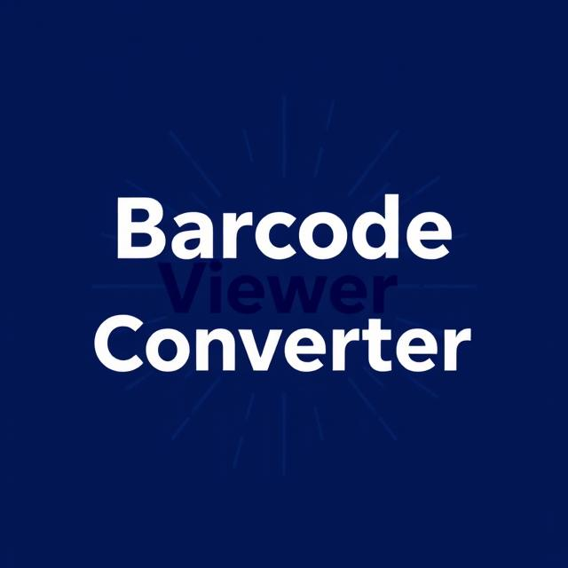

ZPL Viewer & Converter

Project Information
Category: Barcodes
Technologies: Python
Project Date: 2 August 2024
Project repo: GitHub
View ProjectA tool for viewing and converting Zebra Programming Language (ZPL) files into images or PDFs. Useful for label printing automation and visualization. After our Zebra ZT230 (203dpi) stopped working and which has been discontinued, the spare printer we had in the store was ZT231 (300dpi). While having to convert all the labels (40+ Labels) manually, I thought of writing a script that would help for bulk conversion, but I first had to master the individual conversion before adding the bulk conversion feature.